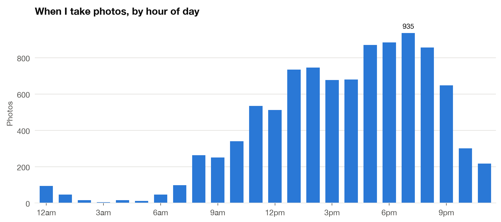
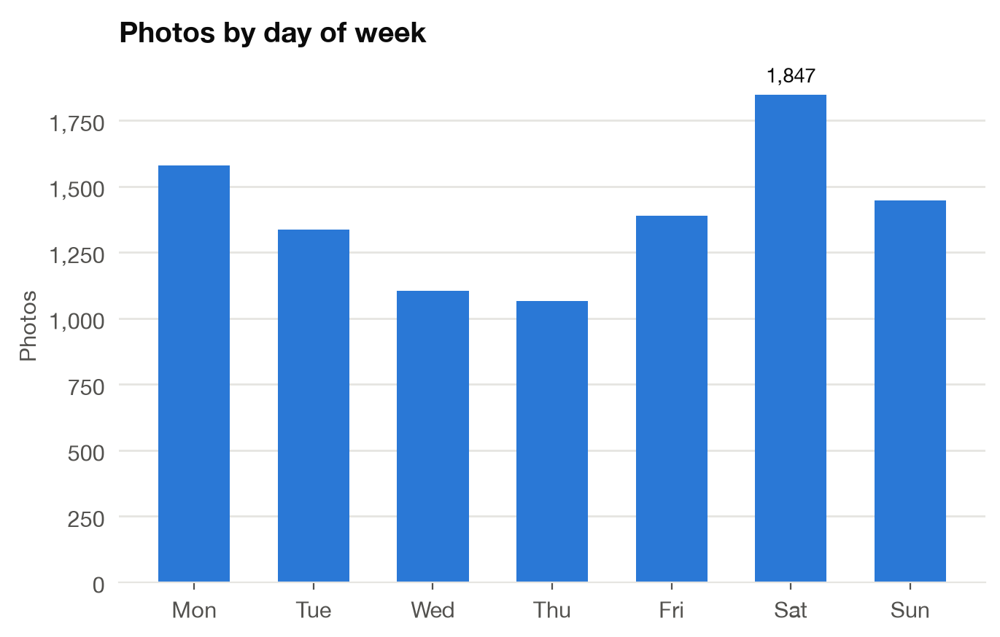
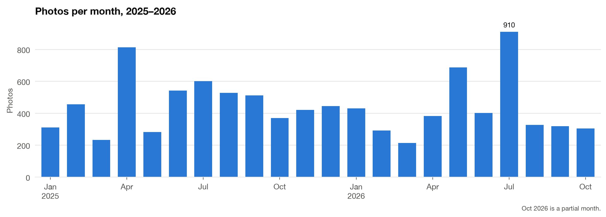
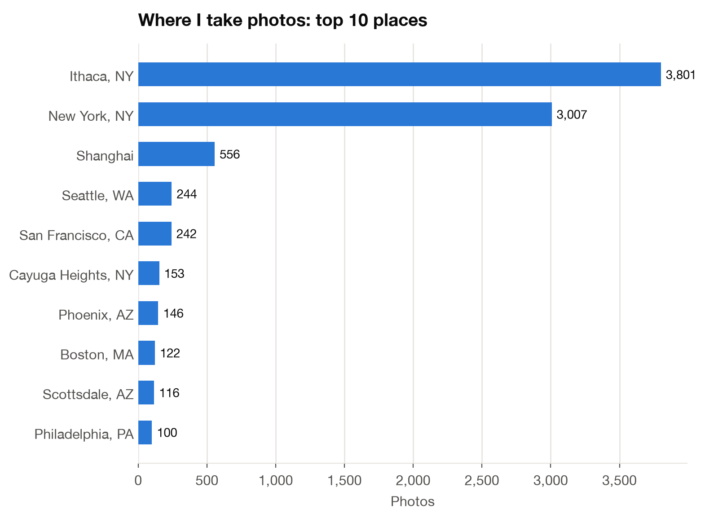

What 9,770 photos say about how I see
I took at least one photo on 649 of the 659 days between January 2025 and October 2026. So I read the metadata behind every one to see what the habit actually looks like.
| feature | value | notes |
|---|---|---|
| count | 9,770 photos | Jan 1, 2025 – Oct 21, 2026 |
| days_active | 649 / 659 | 98.5% of days |
| peak_hour | 7pm | 39% taken between 6pm and midnight |
| peak_day | Saturday | Thursday is the quietest |
| busiest_month | July 2026 | 910 photos, Seattle and Phoenix |
| places | 87 cities | 97% of photos geotagged |
| lens_mix | 52% main · 27% ultra-wide | 13% front camera, 7% telephoto |
| camera | iPhone 15 Pro Max | 9,766 of 9,770 |
An evening photographer
To find out what my photo habit actually looks like, I pulled the EXIF metadata (capture time, location, camera settings) for every photo. I left out videos, screenshots, and anything saved from another app or edited in Photoshop or Xingtu, so what's left is only what I shot myself. The clearest pattern is that I'm an evening photographer. My photo-taking climbs steadily through the afternoon and peaks at 7pm, and 39% of my photos were taken between 6pm and midnight, while the hours before 10am barely register.
The week has a shape too. Saturday is my busiest day, Wednesday and Thursday are the quietest, and weekends account for about a third of everything, more than their share of the week.


It follows where I am, not the season
Month by month, my volume doesn't follow the seasons much. It follows where I am. My three biggest spikes were all trips: Shanghai in April 2025, San Francisco in July 2025, and Seattle and Phoenix in July 2026, which was my busiest month at 910 photos.
The location data also records a move. Until August 2025 almost every photo was taken in New York City. From September onward, going to Cornell meant Ithaca takes over and ends up as my most-photographed place overall.


A diary I didn't mean to keep
What I like about this view is that I never meant to keep a diary, but my camera roll kept one anyway. Instead of looking back at a journal or calendar, I can look back at my photo album and remember clearly what happened on that day, how I felt, and even hear the sounds in live photos and videos.
In ordinary weeks I take a steady stream of photos, mostly at golden hour and dinner. On the days that matter most, it jumps; my single busiest day had 214 photos. Only 13% of my photos use the front camera. I mostly point the lens outward, at places and experiences, friends and family, and of course the occasional chalkboard or slides from class.
How I did it
- Read the metadata, not the photos. Instead of exporting tens of gigabytes of originals, I read EXIF straight from the Apple Photos library database with
osxphotos. The whole 12,126-item album took about 2 seconds. - Keep only what I shot. Every item records the app that created it. I kept photos from Apple's Camera and dropped everything else: Files, AirDrop, Messages, Instagram, WeChat, and edits from Xingtu and Photoshop. Those files carry edited or missing EXIF and would skew the timing.
- Analyze and chart. I used
pandasto group by hour, weekday, month and city, andmatplotlibto make the charts. Times are local to wherever each photo was taken, so travel doesn't shift the hour-of-day pattern. - Keep locations private. The raw data has exact GPS coordinates, so it never leaves my laptop. Only city-level totals are published.
- python
- osxphotos
- pandas
- matplotlib
- exif
What was filtered out
| Items in the album | 12,126 |
| Videos | −842 |
| Saved from Files, AirDrop or Drive | −643 |
| Received in Messages, WeChat and other chat apps | −398 |
| Re-saved copies from Photos | −273 |
| Editing, social and other apps (Xingtu, Instagram, TikTok…) | −200 |
| Photos I took | 9,770 |